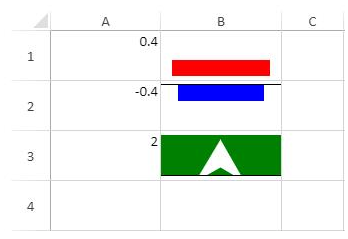

You can create a vbar sparkline using the VBARSPARKLINE formula and cell values.

The sparkline starts at the bottom of the cell for positive values and the top of the cell for negative values. If the value is greater than 100% or smaller than -100%, an arrow is displayed.
The vbar sparkline has the following options:
| Option | Description |
| value | A number or reference that represents the length of the bar. The value should be between 100% and -100%. |
| colorScheme | A string that represents the color of the bar. This setting is optional. The default value is "grey". |
| axisVisible | A Boolean value that indicates whether or not to show the axis. Its default value is true. |
| barWidth | A number greater than 0 and less than or equal to 1, which indicates the percentage of bar width according to the cell width. |
The vbar sparkline formula has the following format:
=VBARSPARKLINE(value, colorScheme, axisVisible, barWidth)
The following code creates vbar sparklines.
| JavaScript |
Copy Code
|
|---|---|
// initializing Spread var spread = new GC.Spread.Sheets.Workbook(document.getElementById('ss'), { sheetCount: 1 }); // get the activesheet var activeSheet = spread.getSheet(0); activeSheet.setValue(0, 0, .4); activeSheet.setValue(1, 0, -.4); activeSheet.setValue(2, 0, 2); activeSheet.setFormula(0, 1, '=VBARSPARKLINE(A1,"red", FALSE, 0.8)'); activeSheet.setFormula(1, 1, '=VBARSPARKLINE(A2,"blue")'); activeSheet.setFormula(2, 1, '=VBARSPARKLINE(A3,"green", TRUE, A3)'); for (var i = 0; i < 4; i++) { activeSheet.setRowHeight(i, 50); } |
|